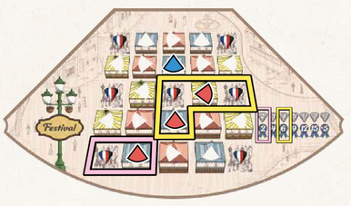
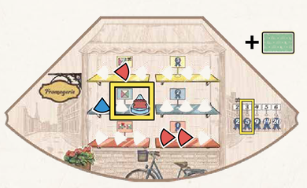
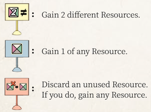
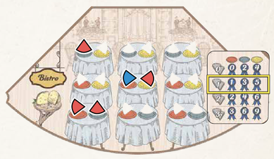
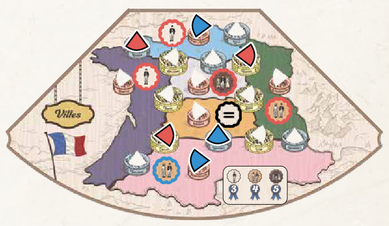

Fromage
Board Game Arena 官方规则文档
Overview
You are a small-town French cheesemaker in the early 20th century competing with others to make and sell the most sought-after cheeses in all of France.
Setup
Each player receives a random player board and three resources (chosen by what quadrant you're facing).
Game Board
The game board has 4 quadrants. Each quadrant includes a "Gather Resources" part (upper) and a "Make Cheese" part (lower).
Each player faces a different quadrant (in BGA, the quadrant facing you is at the bottom). When a turn starts, the board rotates so that each quadrant faces someone new. This automatically counts down the turns until your worker is ready to be used again. All ready workers are retrieved (any cheeses pointed at you are "ready"). After everyone finishes their actions, the board rotates so you can take actions in a new quadrant.
Each player can make 15 cheeses. When one player has made all their cheeses, the game ends.
Gameplay
Actions
Gather Resources
Each quadrant has a different type of resource that can be gained by placing a worker on it. Choose an available space and place your worker on it (cheese type does not matter). The number indicates how many of that resource you get and how many turns until that worker becomes available again (for example, placing a worker on the "2" space means you get 2 resources, and it will take 2 turns to get that worker back). This is also indicated by the position of the cheese (when the cheese points to you, you get the worker back). You can only Gather Resources once per turn.
Resources
Structures
Structures give you abilities and extra actions, but require structure tokens to build. The structure's cost is the number of scaffolding spaces shown. Any time during your turn, you can pay structure tokens to unlock a structure. You can start using its ability immediately. The structures on each player board vary in results/resources produced, but are activated in similar ways.
- Barn: Gain the resource shown by placing a worker or workers here. You get the worker back at the beginning of your next turn.
- Greenhouse: When you gain the shown resource, gain 1 additional resource of that type. (Only once per turn)
- Loading Dock: When you place a cheese in the given venue (either by the Make Cheese action or a bonus cheese from a Milking Parlor), gain 1 resource of the type shown.
- Headquarters: Gain 1 point for each used resource shown.
Livestock
You can use livestock resources to make cheese without placing a worker. Each player board has four milking parlors. The number of resources and type/age of cheese produced varies by player board. A milking parlor can only be used once per game, but you can make as many bonus cheeses as you have livestock resources.
Fruit
Some cheeses are fruited (indicated by a fruit or jam icon) and require a fruit token to be made (which can be gained from the bistro quadrant). When you make a fruited cheese, the fruit token is moved from your basket to either the "used fruit" area or "used jam" area. At the end of the game, you earn points for the number of tokens used for fruit times the number of tokens used for jam.
Orders
Order cards give you points for making the type and age of cheese indicated on the card (one order per cheese). Orders cannot be completed retroactively, but you can complete orders with cheese made with livestock in a milking parlor.
Make Cheese
Making cheese is the best way to score points, and each quadrant ("venue") scores differently. In all quadrants, cheese is made by placing a cheese token of the right type (soft, hard, or bleu) on a matching space. If the space has a fruit or jam symbol, you must have a fruit in your fruit basket to make this cheese. You can only "make cheese" once per turn (but there are ways to put more than one cheese down per turn).
Each cheese space also has an age, which is how many turns before that worker becomes available again. Age is indicated by the space's background color (a plate, tent, shelf, etc.) and cheese position. A cheese on a Bronze space will take 1 turn to fully age (meaning it will become available again on the next turn), Silver will take 2 turns, and Gold will take 3 turns. Once your worker returns to you, your cheese token remains on that space, indicating you have taken that cheese.
Some spaces are blocked off in 1-3 player games.
Venues
Festival
This venue rewards you for how nicely your cheeses are arranged. Place your cheeses orthogonally adjacent (north, south, east, west) to earn prestige points. Free Sample spaces count as a wild space (for all players). The more aged your cheese, the more wild spaces next to your cheese (e.g., gold spaces are adjacent to 2 spaces, bronze spaces are adjacent to none). At game end, you earn points according to how many adjacent cheeses you have in each of your groups.

Fromagerie
This venue rewards you for variety in your cheeses. Place your cheeses on different shelves. At game end, you earn points according to the number of shelves you have a cheese on.

Each shelf has a bonus, which you immediately receive when you place your cheese there. Longer-aged cheeses gain bigger rewards.

Bistro
This venue is based on cheese pairings. You score points for each plate with your cheese token on it, but the value of those plates depends on how many cheese pairings you made. (For example, if you made 1 pairing, cheeses on a bronze plate score 1 point, cheeses on a silver plate score 3 points, and cheeses on a gold plate score 5 points).

Villes
This area is a map of France divided into 6 regions. Your goal is to place your cheeses so they influence the most regions. Bronze spaces influence 1 region, silver spaces influence 2 regions, and gold spaces influence 3 regions. The player who has the most influence in a region gains the Customer Token for that region (which varies in value based on player count). Players who are tied for the most influence score fewer points (0 in 1-2 player games).

Game End
When a player places their final cheese Token, all players finish their turn. Points come from scoring each venue (see venues for how each is scored), fruit, structures, completed orders, and unused resources (1 point for each 2 remaining resources).
All cheeses on the board at game end are valid--they do not have to be fully aged to count for scoring.